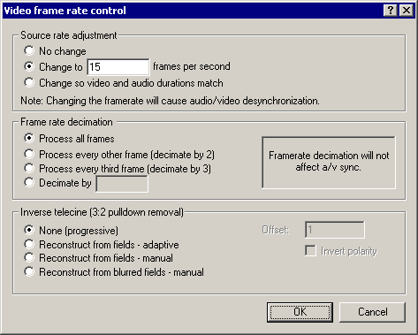

On a crash...
Dialogs: Video filters
Video frame rate control
Video color depth
Video range
Video compression
Audio filters
Audio interleaving
Audio compression
Audio conversion
Audio volume
Capture settings
Capture preferences
Capture volume meter
Preferences
|  The Video frame rate control dialog allows you to alter the frame rate of video, reduce the number of frames, or remove 3:2 pulldown. - Adjusting frame rate
- If the source video has the wrong frame rate or doesn't natively have a frame rate (image sequence), you can specify one in the source correction portion of the dialog. You can either type in a rate, or have VirtualDub automatically choose a "same length" setting, such that the video and audio tracks end at the same time.
| Note | No frames are added or deleted by this setting, so if the video is synchronized with the audio beforehand it won't be after you change the frame rate. Similarly, if the video isn't synchronized, you may be able to fix it with this setting. | | Note | Manually entered frame rates are rounded to the nearest microsecond period. In particular, you cannot enter an exact NTSC fraction (30000/1001). | - Frame rate decimation
- Decimation pulls frames from a source at regular intervals. This is useful for producing "thumbnail" videos with small sizes, and for dropping the rate of a video without introducing jerkiness due to uneven frame rate. The decimation interval must be a positive integer.
- Inverse telecine (3:2 pulldown)
-
3:2 pulldown, or telecine, is the process by which film-rate material (24 fps) is converted to NTSC rate (29.97 fps). This is done by splitting the film frames into fields, and then "pulling" fields down in an alternating 3,2,3,2... pattern. This produces five output frames for every four input frames, in a characteristic pattern of three progressive frames, followed by two interlaced frames. The resultant 30 fps stream is then slowed down slightly to the target 29.97 fps. Inverse telecine (IVTC) attempts to recover the original 24 fps stream by analyzing the input frames and removing the duplicate fields. In adaptive mode, VirtualDub attempts to guess the position of the 3:2 pattern, while in manual mode, you specify the offset and polarity. In both cases, the input frame rate is dropped by 20%, changing a 29.97 fps input to 23.976 fps. The third mode, reconstruct from blurred fields, handles the case where a video has been telecined, and then the fields blurred together, usually by shrinking the video size. In this case the original frames cannot be recovered by matching fields, but can be recovered through simple frame algebra. The reconstructed frames will have more noise and possibly ghosting where clipping at black or white has occurred, but if successful the result is a smooth progressive video. | Note | All of VirtualDub's IVTC modes assume a regular 3-2 pattern. More complex telecine patterns are possible which cannot be removed through this system. | |